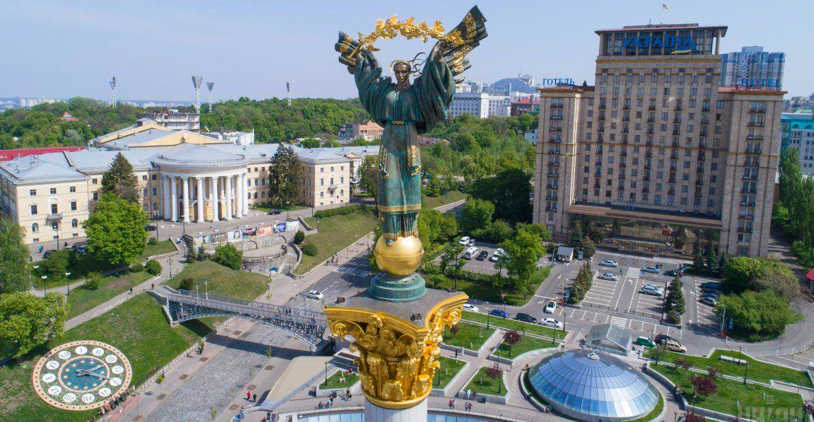

Місце народженння: 02 жовтня 2002 року, Чернігівська область, Прилуцький район, смт. Дігтярі
Освіта: Дігтярівська ЗОШ; Національний технячний університет України "Київський політехнічний інститут імені Ігоря Сікольського"
Хоббі:
Улюблені фільми:
Київ – столиця України та одне з найстаріших міст Європи, засноване щонайменше 1500 років тому. Сучасне європейське місто здатне здивувати будь-кого – від любителів природної краси, архітектури та визначних пам'яток до тих, хто віддає перевагу більш насиченому та активному відпочинку.
